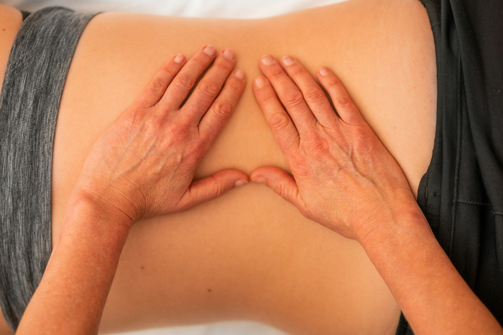
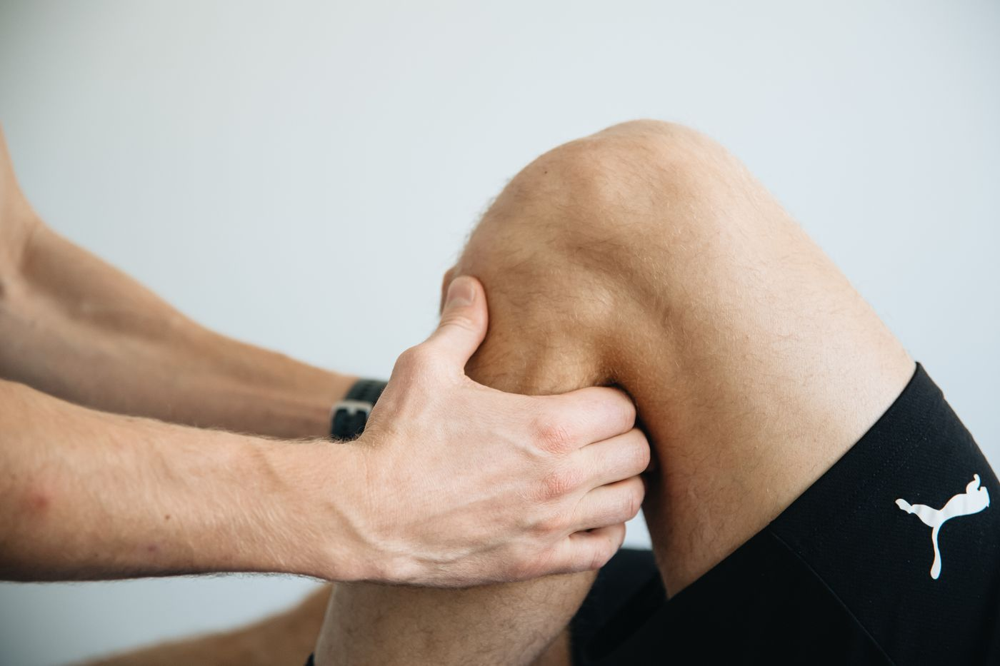
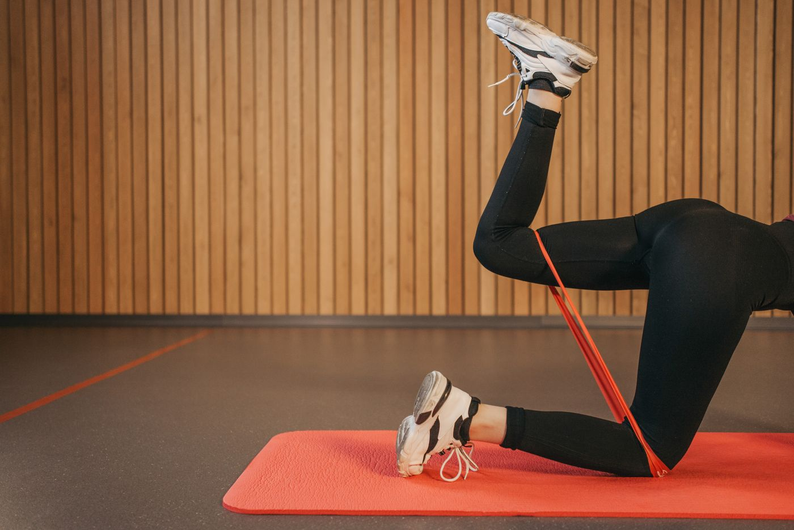
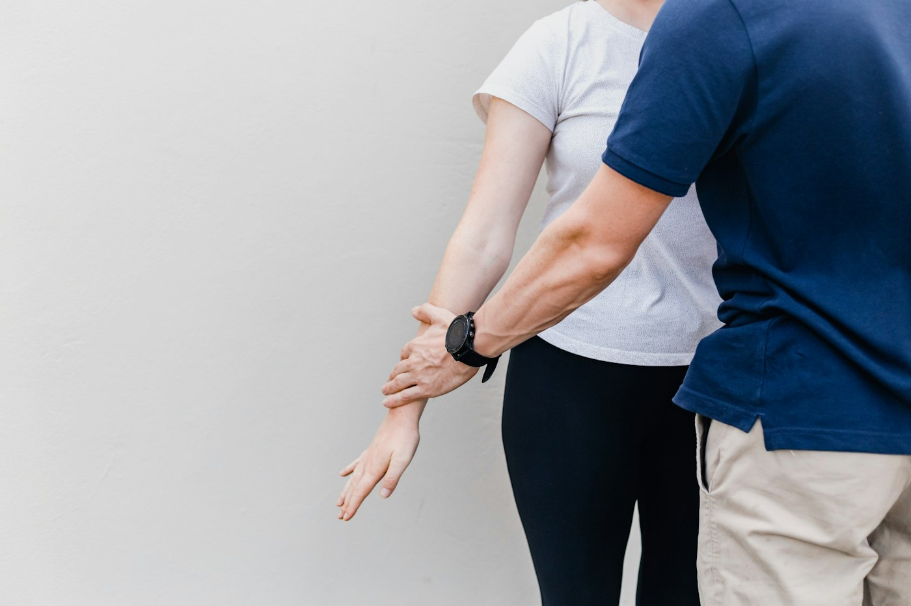
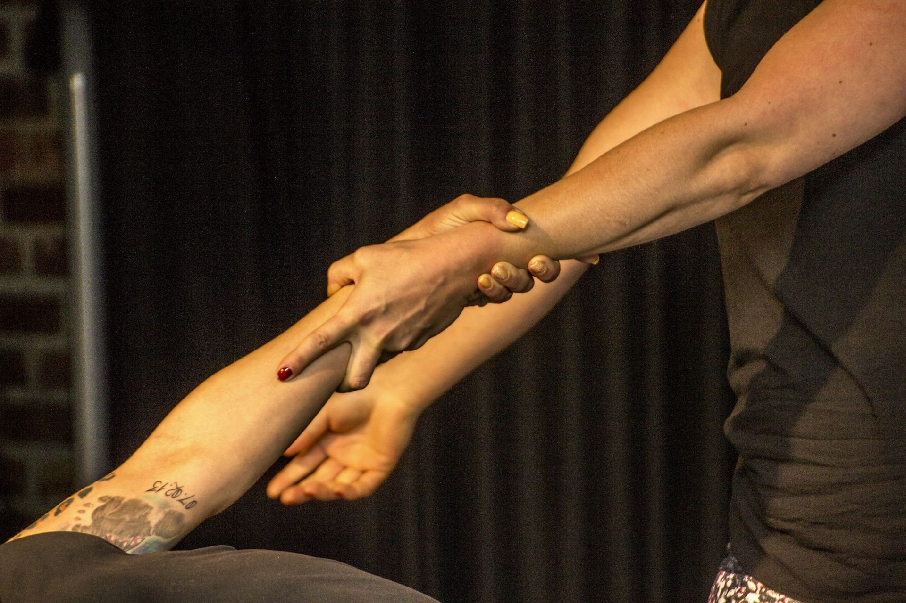
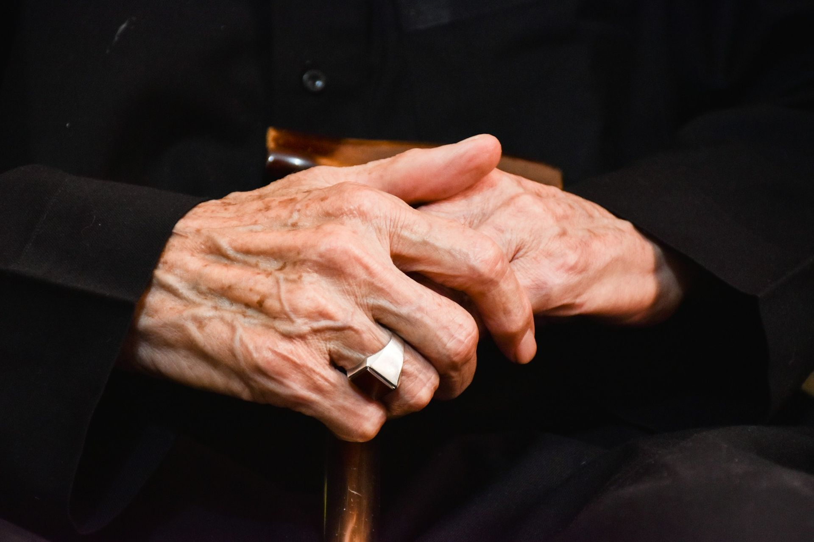

Ankommen
Sie erzählen, was Sie belastet und was Sie sich wünschen. Das erste Gespräch ist unverbindlich.

Seit 1986 Physiotherapeutin. Meine Privatpraxis für Physio- und Körperpsychotherapie liegt in Hannover und Hemmingen.
40Jahre Physiotherapie

Sylvia Sroka
Physiotherapeutin und Heilpraktikerin
Nach einer gründlichen Untersuchung besprechen wir gemeinsam, welche Behandlung Ihnen hilft. Ein unverbindliches Erstgespräch ist jederzeit möglich.
Viele kommen zum ersten Mal und wissen nicht, was sie erwartet. So läuft eine Behandlung bei mir ab.
Physiotherapie hilft zum Beispiel bei Rückenschmerzen und Verspannungen, nach einer Operation oder nach einem Schlaganfall.
Sie erzählen, was Sie belastet und was Sie sich wünschen. Das erste Gespräch ist unverbindlich.

Ich sehe mir Haltung und Bewegung genau an und suche, woher die Beschwerden kommen. Daraus entsteht Ihr Therapiekonzept.
Mit den Händen und gezielten Griffen werden Verspannungen gelöst und Muskeln und Gelenke wieder in Bewegung gebracht.

Übungen für zu Hause helfen, dass das Erreichte im Alltag bleibt.
Bequeme Kleidung, ein großes Handtuch und, falls vorhanden, ärztliche Befunde oder eine Verordnung.
Bewegung und Funktion wiederherstellen, Beschwerden lindern. Dafür arbeite ich vor allem mit drei Verfahren.
Physiotherapie bei Erkrankungen des Nervensystems, etwa nach einem Schlaganfall oder bei Parkinson. Ziel ist, Bewegungen im Alltag wieder sicher auszuführen.

Ein Behandlungskonzept, das gestörte Bewegungsabläufe Schritt für Schritt neu anbahnt.
Eine sanfte Behandlung mit den Händen, vor allem an Kopf, Nacken und Rücken. Ich bin ausgebildete CranioSacral-Therapeutin.
Seit 1986 behandle ich vor allem neurologisch schwer und schwerst betroffene Menschen und bilde mich in diesem Bereich laufend fort.
Abläufe, die verloren gingen, werden Schritt für Schritt wieder angebahnt.
Zu feste oder zu schwache Muskeln kommen wieder ins Gleichgewicht.
Gleichgewicht und Gehen werden gezielt geübt.
Anziehen, Greifen, Aufstehen: das Ziel ist mehr Selbstständigkeit.
Deshalb verbinde ich Physiotherapie mit Entspannung, Achtsamkeit und Gesprächen.
Viele Beschwerden haben auch mit Stress und Belastung zu tun. Als Heilpraktikerin für Physio- und Psychotherapie biete ich deshalb auch Körperpsychotherapie an.
Probieren Sie es gleich aus: Atmen Sie eine Minute lang mit, vier Sekunden ein, sechs Sekunden aus. Der Kreis zeigt Ihnen den Takt.
Bereit
eine Minute

Hausbesuche nach Absprache und Begleitung für Angehörige.

Wenn der Weg in die Praxis schwerfällt, komme ich nach Absprache zu Ihnen. Dort, wo der Alltag stattfindet, lässt er sich auch am besten üben.
Ich weiß aus eigener Erfahrung, was es heißt, einen Menschen zu pflegen. Auch Angehörige finden bei mir Begleitung und Entlastung.
Übungen für zu Hause, Begleitung für Angehörige und Antworten auf die häufigsten Fragen.
„… eine umfassende körperliche und seelische Begleitung, um diese Lebensphase lebenswert zu gestalten.“
Physiotherapeutin seit 1986, Heilpraktikerin für Physiotherapie und Psychotherapie, CranioSacral-Therapeutin, Stressmanagement- und Entspannungstherapeutin, Achtsamkeitstrainerin. Seit 2009 Inhaberin des Physio Rosenpark.
„Frau Sroka nahm sichstets Zeit, um meineSituation mit mir zu besprechen.“Stimme eines Patienten auf Jameda
Rufen Sie an oder schreiben Sie mir. Ich behandle Privatpatienten.
Privatpraxis Sylvia Sroka
Physio Rosenpark
Termine nach Vereinbarung, Hausbesuche nach Absprache.
Schreiben Sie mir kurz, worum es geht und wann es Ihnen passt. Ich rufe Sie zurück.